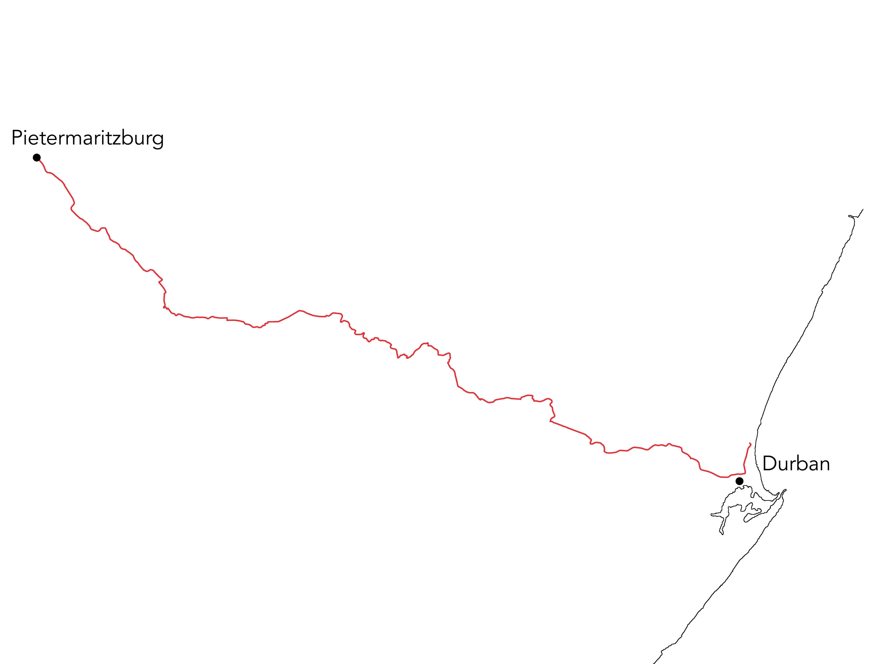
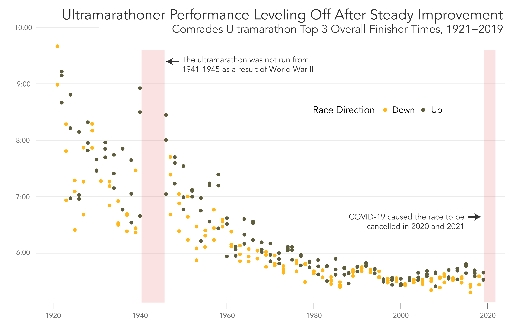
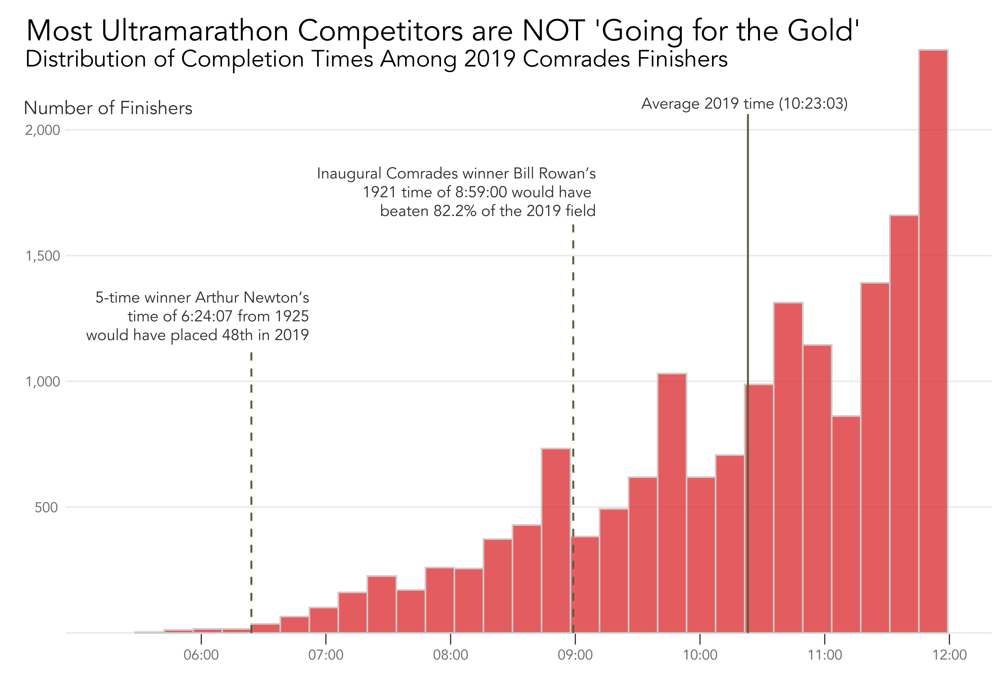
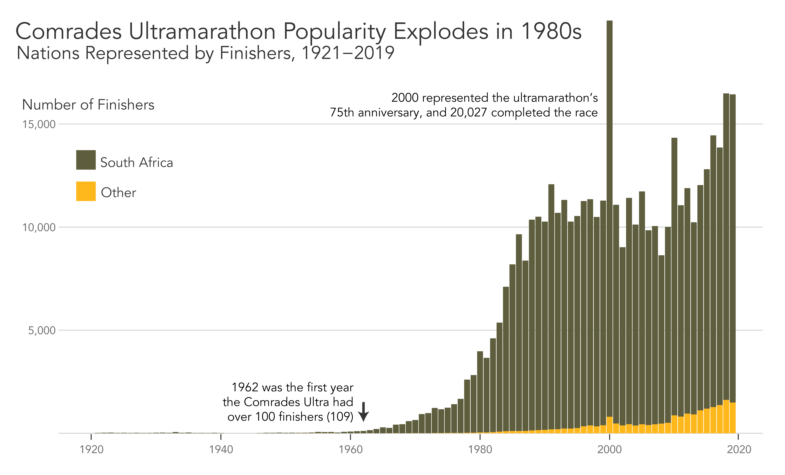
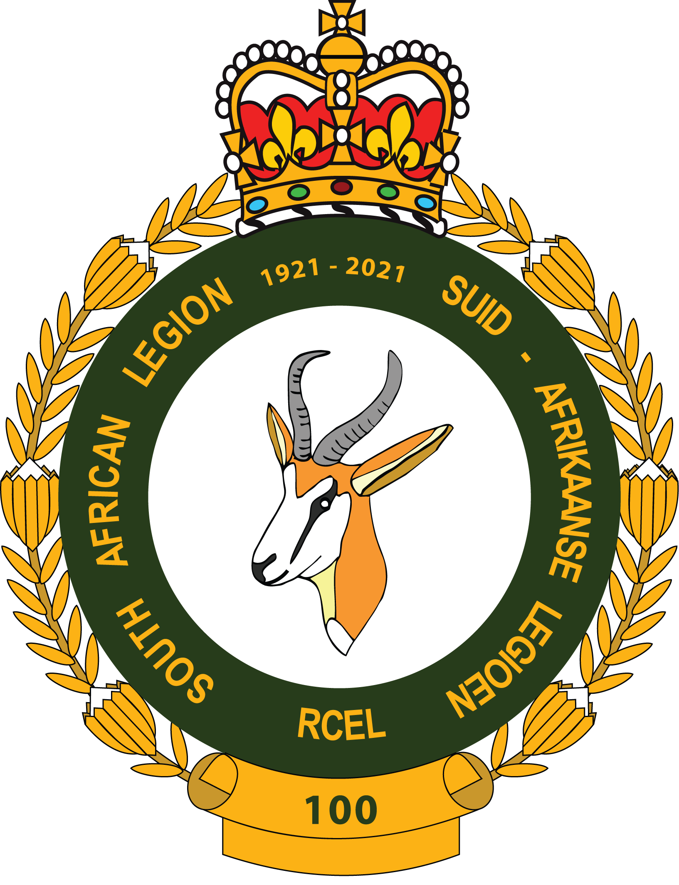

By Thomas Leonard
May 1, 2025
Definitionally, an ultramarathon is any footrace longer than the 26.2 miles/42.2 kilometers of a full-length marathon. This ambiguity leaves much room for interpretation, and South African infantry veteran Vic Clapham saw the category as a perfect fit for a "living memorial" to honor those who lost their lives in World War I.
Established by Clapham in 1921 and underwritten by the 'Comrades of the Great War' veterans association (now the South African Legion of Military Veterans), the Comrades Ultramarathon was the first race of its kind- a roughly 90 kilometer (~56 mile) route taking place between Pietermaritzburg and Durban, South Africa, designed to represent the long marches taken by infantrymen in the Great War.
To this day, the South African Legion remains involved in the race, helping at refreshment stations and handing runners red poppies as a symbol of remembrance for those who died in the war.
Traditionally, Comrades switches directions in alternating years, with the Pietermaritzburg to Durban route called the "down" run and the Durban to Pietermaritzburg route the "up" run- the names reflecting the difference in elevation between the two cities. While over the course of such a long race there are many factors that determine finishing time, the "down" route tends to be the more popular of the two and typically results in faster finishing times. 9-time winner and Comrades legend Bruce Fordyce believes that his favored "up" route's steep hills and rising temperatures as runners head inland from coastal Durban receives "ill-deserved bad press" despite the "down" route "hurting much more" as a result of the impact of downhill running. Regardless, it goes without saying that neither route is easy.
Runner times in the Comrades ultra increased steadily from its first running in 1921 until the late-1980s, as the distance running landscape gained popularity, awareness around nutrition and training advanced, and running shoe technology saw major improvements. For example, the mid-2010s introduction of carbon fiber-plated running shoes among elite marathoners resulted in time improvements for men and women of 2% and 2.6% respectively, according to a 2021 study.

Despite the significant improvement in finishing times among the race's most elite runners, the majority of Comrades competitors are not out there to win the race outright. Even with modern training, nutrition, and technology, the Comrades is still a grueling test of endurance, and most runners are simply looking to complete the race within the 12-hour time limit and earn the coveted Vic Clapham/Comrades Finisher medal named in honor of the race's founder.
This is reflected by the difference in finishing times between those in the 2019 race and some of the race's iconic early runners, whose finishes have stood the test of time and are especially impressive when considering the lack of modern training and technology available to them. Bill Rowan, who won the inaugural Comrades in 1921 with a time of 8:59, even has a medal named after him to be given to runners who complete the ultramarathon in under 9 hours, a feat which was achieved by less than 18% of the 2019 Comrades field of finishers.

A transformative period for the Comrades marathon began in 1975, as the race became open to women and Black runners for the first time, widening the field despite South Africa's lingering apartheid. However, the race was still tied to the pro-apartheid government, and runners in the early 1980s used their platforms to speak out against the inequity- 1981 winner Bruce Fordyce secured his first of 9 eventual Comrades wins while wearing a black armband in protest.
This period coincided with the early-1980s popularity boom in distance running, in particular of fixed-time runs, where runners would compete to see who could run the farthest distance around a loop course in a given period of time rather than a set distance. In addition to this, ultramarathon World Championships for 50- and 100-kilometer distances began in 1987, representing a turning point in the acceptance of ultramarathon running as a bonafide sport.

Medals and records aside, most ultramarathoners are racing to push their body's limits rather than for whatever glory they may attain. Ultramarathons are extraordinarily physically demanding, but the mental fortitude required of competitors is what truly defines the difficulty of distance running. As the iconic ultramarathoner and motivational speaker David Goggins puts it, "don't stop when you're tired, stop when you're done."
